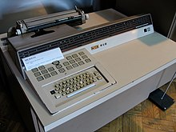
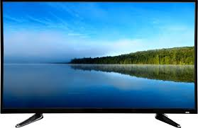

First gentration computer start in year 1940 and End 1956.
vaccumTube computer Different enigine character use to following os.
1.lot of space
2.expensive to operater
3.lord of electricity and large amount of heat
E-ELECTRICAL
N-NUMERICAL
I-INTEGATOR
A-AND
C-COMPUTER
Eniac computer Development by the John W. Mauchly&J. Presper Eckert Jr.
E-ELECTRONIC
D-DISCRETE
V-VARIABLE
A-AUTOMATICAL
C-COMPUTER
Esvac computer madeJ. Presper Eckert Jr.&John W. Mauchly.
It is stroe Program machine.
U-UNIVERSAL
A-AUTOMATIC
univac-1 computer made by J. Presper Eckert Jr.and John W. Mauchly.

Second Generation Computer Start in Year1956and End 1963.
Use Parts
Transistors
work memory
It is save to Data
It Was Faster
1.UNIVAC-III

2.IBM=700
3.IBM=1401
4.NCR=300 SERIES

Third Generation computer start in year 1963to till.
Third generation computer use to IC .That is called Chip.

It is use to small electroinc device made from special matrial.
They were faster and more effect By second generation computer.
The user Commmunit with the computer using keybord and moniter.They use to operating system they allow tomany different to run at once time
fourth Generation Computer Start in year 1972 to till.

V-VERY
L-LARGE
S-SCALE
I-INTERGATION
U-ULTAR
L-LARGE
S-SCALE
I-INTERGATION
1.DESKTOP

The present day computer can link together computer networkIt is called Internet.
W-WORLD
W-WIDE
W-WEB
fifth Generation computer start in year 1973 to till.
Aritifical intergalactic branch of computer science that deals with making computer think and take devision like tumanbine.
Those computer will be take commmand in audio & visual With carry out information .
1.laptop
2.lcd
3.led